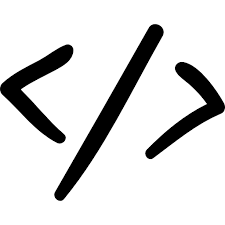

Mahasiswa Program Teknik Informatika akan mempelajari konsep ilmu computer science serta implementasi praktis software engineering. Keahlian utama tersebut ditunjang dengan keahlian-keahlian khusus yang dapat diambil sesuai bidang peminatan, yaitu:
- Game & Mobile Apps
- Web & Multimedia
- Intelligent Computing
- Network Security
Aktivitas Akademik
Fokus utama perkuliahan adalah dalam keahlian pengembangan software (software methods and technologies). Proses pembelajaran seimbang antara konseptual dan praktik di labolatorium, menyiapkan mahasiswa agar siap berkarya secara maksimal di dunia kerja/ usaha setelah menyelesaikan kulaih. Lulusan akan memiliki keahlian pengembangan aplikasi mobile/desktop application, berbasis intelligent computer & network security.
Masa Depan dan Karier
Lulusan Program Sarjana Teknik Informatika sudah banyak yang berhasil menjadi wirausahawan, maupun bekerja di berbagai perusahaan di tingkat nasional, multinasional, bahkan skala internasional. Masa tunggu lulusan untuk memperoleh pekerjaan atau menjadi wirausahawan juga terhitung relatif singkat. Lulusan program ini dapat berkarier dalam bidang/ sebagai:
- Teknopreneur: IT solutions, independent software vendor
- IT Architect: system analyst
- Software engineer: mobile developer, desktop developer, NET developer, JAVA developer, web developer, intelligent system developer
- Database engineer: database developer/designer, database administrator
- System engineer: network engineer, security engineer